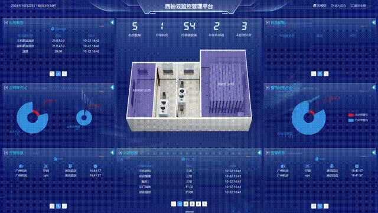
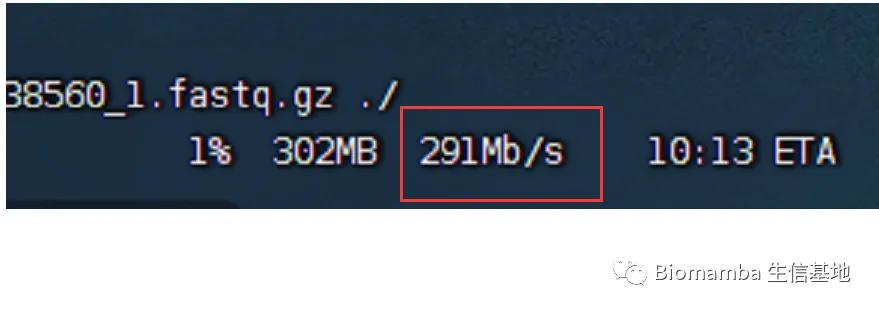
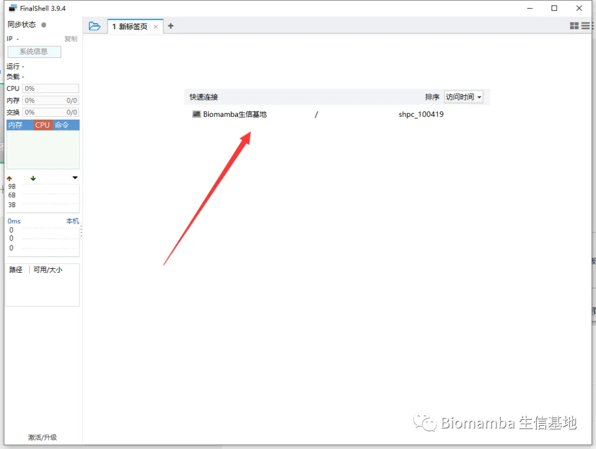
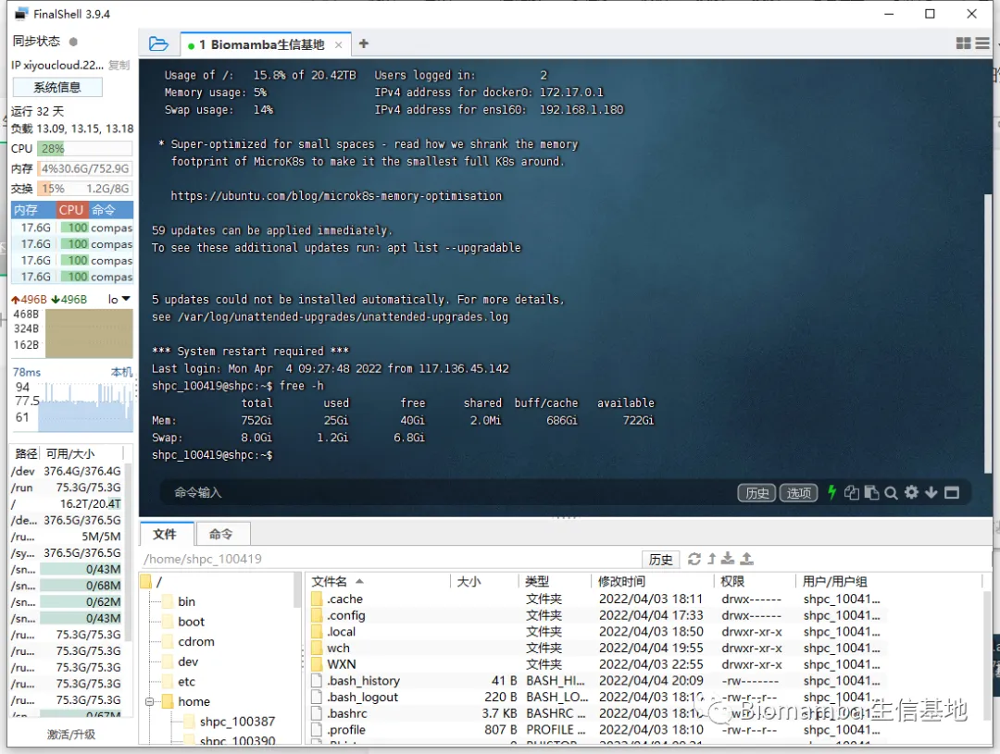
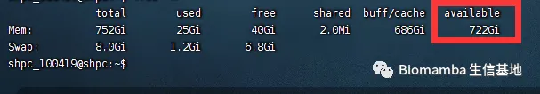
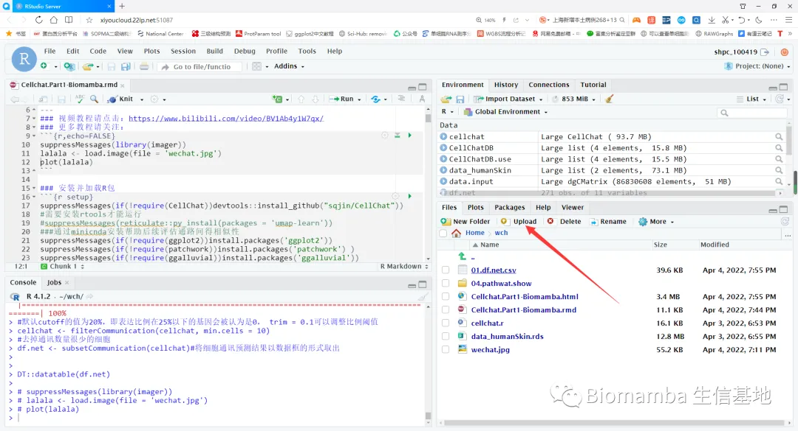

真·独享服务器
原文：https://mp.weixin.qq.com/s?__biz=MzAwMzIzOTk5OQ==&mid=2247522266&idx=1&sn=3ea8087e380f0cdee0d9632afb6b7582&chksm=9b3cee8aac4b679c2f04aa616dbb1e233c04e922117e442e9ec4e347b7f90794e7dd61d53590#rd 合集：服务器
突然想起刚从业时没有充足计算资源 的窘迫，想要自己组装机器却又对硬件一窍不通，云服务器很多时候的确是一根救命稻草 ，能让你从容的应对海量的生信数据 。

独享服务器
随着网络技术的发展，云计算技术可以让大家随时随地 通过云服务器工作(居家办公利器)。也正是如此，各类应用也可以通过云计算运行，而且不用考虑服务器庞大的机身 而占用过多的空间。使用过实体服务器 的朋友都知道，除了占用空间外，服务器还会产生很大的噪音 ，如果在家里或者单位上使用实体服务器，那嗡嗡作响的声音好比一个小型工厂，十分糟心。通过云技术的加持，实体服务器的痛点，在不影响性能的情况下，都可以根除。西柚云深耕生物信息学云服务器多年(十年技术沉淀)，深知用户所想所需，强大的技术团队，多年累积的经验以及紧跟热点需求的定制 和升级服务，打造了可支持各种使用场景的云计算平台(目前已装机100PFLOPS 算力，储存量7.63PB)。定制版 独享服务器对比同配置下的其他品牌，价格更低 、产品性价比高。以12核128G内存 5T磁盘、500M带宽 的独享配置为例，西柚云定制独享版本只需8400元 /年(当然还有性价比更高的，但不是纯独享服务器：具有root权限的共享服务器)，相同配置下其他品牌的独享版本，费用高达万元/年。注册下单链接：https://biomamba.xiyoucloud.net/(复制到浏览器访问)下单前可添加微信Biomamba_zhushou领取优惠 ！

西柚云基本只需要1/4 的价格就能买到4~5倍 的配置，某大厂报价，64GB 内存一个月就要两千 了。不同于其它挂载在公有云的服务器，西柚云拥有独立机房与成熟的管理系统，能够事实反映设备占用量、机房/设备温度、通讯情况，为向大家提供稳定、高效的算力保驾护航。

定制版独享云服务器有什么好处?
1、支持定制 ！打造专属于你的完美服务器！可将具体需求发给微信Biomamba_zhushou。
2、不会因为别人的带宽占有率增大，而导致自己网站的带宽不够用。独享服务器的网络有专门线路去分配网络资源，网络不共享使用，特别配置了500兆 的专线网络，速率达标。
3、拥有最高管理员权限，可以随意添加用户 ，租一台服务器整个实验室都能用，控制权都在自己手里。
4、拥有完全独立的环境以及完全独享的资源 ，不会出现共享服务器高峰期资源不足的情况，独享的资源带来的高效率可以有效提高产出的速度。
5、会有专业的技术人员，定期去维护服务器，对比实体服务器可以免去对机器维护 的步骤，您只负责用，维护交给专业的人去打理。云储存采用分布式存储三副本数据备份 ，更可靠，存的安全，用着放心。
详细描述及图文教程
具体配置的服务器每年的租用价格，需要购买的可以文末加客服微信先联系一下 ，目前谈下来最终的方案是标价-200￥、且有额外返现（购买后加微信Biomamba_zhushou返现）。 注册购买链接：https://biomamba.xiyoucloud.net/(粘贴至浏览器打开，不要从微信中跳转)现在通过填写优惠码[biomamba]购买独享也可以立减200￥ ：

● 另外，可咨询文末微信号领取返现福利(200￥折扣可与返现可叠加)，注册链接：
https://biomamba.xiyoucloud.net/
西柚云的几点好处：1、价格优势上面已经给大家说过了，何况还有免费版供大家学习2、第二个好处是大家的设备、R语言、Rstudio的版本与我有所出入，有相当一部分同学运行我的代码时由于版本的问题会遇到报错，综合这两个问题，初步有一个解决的办法——共享服务器。使用这个服务器，我们都可以在同样的环境下进行操作，每台服务器已经预先安装了我使用过的全部R包，直接加载即可，排除版本问题并拥有足够的配置。以后我们的课程都会在西柚云中进行录制。 这里放一个实际使用时的测试视频：
3、网速方面也比较给力我下载文件时最大速度可以超过100M/S。就我个人来说，就当买个网盘用来高速传输也是很划算的。没有梯子的同学也可以试试用西柚云下一些墙外的东西。

下面演示一下基本操作流程和优势！没有用过服务器、不会安装与连接的同学也不用担心，会有客服手把手教学 ！1、下载并安装finalshell http://www.hostbuf.com/downloads/finalshell_install.exe这一步应该不用多说，下载后双击运行按默认参数点下一步直至完成安装即可。
2、连接服务器：（1）创立连接：第一次创建连接的时候可能有点麻烦，需要按以下1、2、3号箭头依次点击。

在弹出的窗口中依次填入购买成功页面显示的以下信息后点击确定。 关闭finalshell并重启后即可通过双击快速连接访问服务器，以上的信息填写一次就好啦，以后直接点击这个快速连接即可：
关闭finalshell并重启后即可通过双击快速连接访问服务器，以上的信息填写一次就好啦，以后直接点击这个快速连接即可：

进来以后就是Linux的页面：
可以看出服务器的中还有722GB的内存处于可获取状态，这个配置对大家来说肯定绰绰有余，无论运行什么样的单细胞数据应当都不在话下。

3、文件传输老粉丝看过我这个教程（Linux与Windows实现文件交互的几种方式）的应该知道，如果用Putty连接Linux，文件传输还得额外安装一个FileZilla。但是Finalshell是集命令行和文件传输于一体的远程控件： （1）点击打开文件传输页面

（2）即可通过下面的列表进行文件传输

4、使用R语言
(1)R
用过Linux的都知道，在命令行敲一个R即可进入R环境，但是这种方式不太好操作。不推荐。

（2）Rstudio
购买产品后的页面会提供一个网页版Rstudio的链接，复制到浏览器打开即可，下面的红色箭头即可上传文件，用起来比较方便


如何联系我们

 公众号后台消息更新不及时，超过48h便不许回复读者消息，这里给大家留一下领取资料及免费服务器(生信分析为什么要使用服务器？)的微信号Biomamba_zhushou ，方便各位随时交流、提建议（科研任务繁重，回复不及时请见谅）。此外呼声一直很高的交流群 也建好了，欢迎大家入群讨论：
公众号后台消息更新不及时，超过48h便不许回复读者消息，这里给大家留一下领取资料及免费服务器(生信分析为什么要使用服务器？)的微信号Biomamba_zhushou ，方便各位随时交流、提建议（科研任务繁重，回复不及时请见谅）。此外呼声一直很高的交流群 也建好了，欢迎大家入群讨论：
大家可以阅读完这几篇之后添加给生信入门初学者的小贴士 如何搜索公众号过往发布内容

 您点的每个赞和在看，我都认真当成了喜欢
您点的每个赞和在看，我都认真当成了喜欢